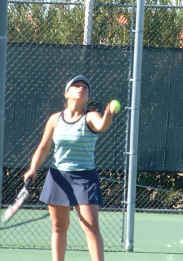
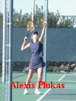
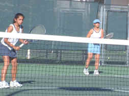

|

Another incredible day of tennis for Liz at the USTA Winter
National 14s. In the round of 16 Liz's opponent was hard
hitter Alexis Plukas of Massachusetts. Plukas is ranked 34 in
the country in the 14s. Liz opened up with a display of
unstoppable shots and Plukas missed a few too many. After
jumping to a 4-0 lead, some of the big hard Plukas shots began
painting the lines and Liz held on for a 6-4 win in set one.
Plukas was not out there to give Liz an easy time. With her
big serve she challenged Liz's return game. With Plukas
serving at 1-2 in the second set, the game stretched on with
Liz hitting some outstanding shots and then making some easy
unforced errors when she had the advantage. This long game was
the key to the set and Plukas went on to prevail in set two
6-3.  Liz
came out a bit shaky and emotional tight in the third set,
falling to a 2-0 deficit, but she fought hard to reach some of
Plukas unreachable shots and kept in the points, putting
pressure on Plukas to hit better shots. Liz's tough play on
every ball paid off with a nail-biting three set victory 6-4,
3-6, 6-4. This puts her in the quarterfinals against Chistine
Visico from Long Beach, California.
|
|
Stu and Dorothy are looking pretty happy as the sun sets in
the background after watching Lizzie [play a three hour match
in the middle of the day. This evening was dinner in the room
with some pasta take-out from a restaurant, some Caesar salad
and a bottle of wine from California. The Geyser Peak Meritage
was agreeable but not very sophisticated.
With only an hour's
rest after her singles victory, Liz had to play doubles with
her partner Alicia Menezes of Staten Island, NY. Her singles
was physical and emotionally draining and the tough team of
Lin Waterford and Christine Visico took the New Yorkers out
6-2, 6-2

|